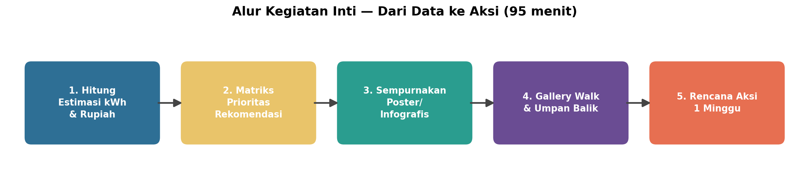
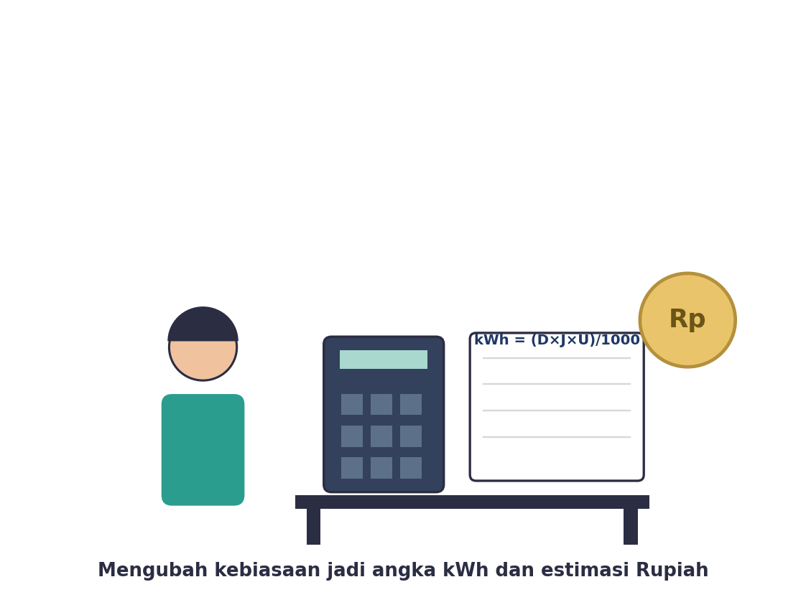
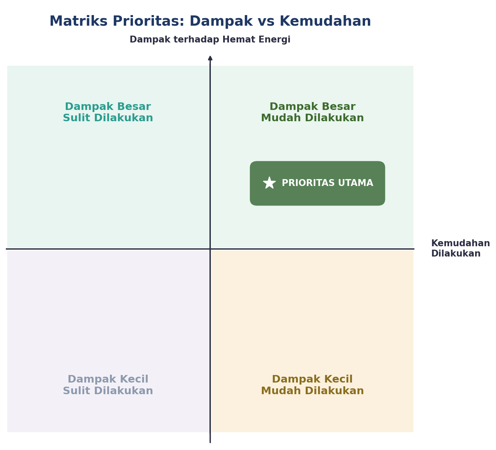
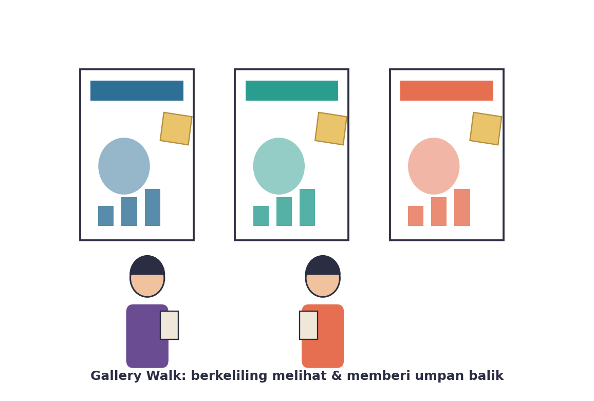
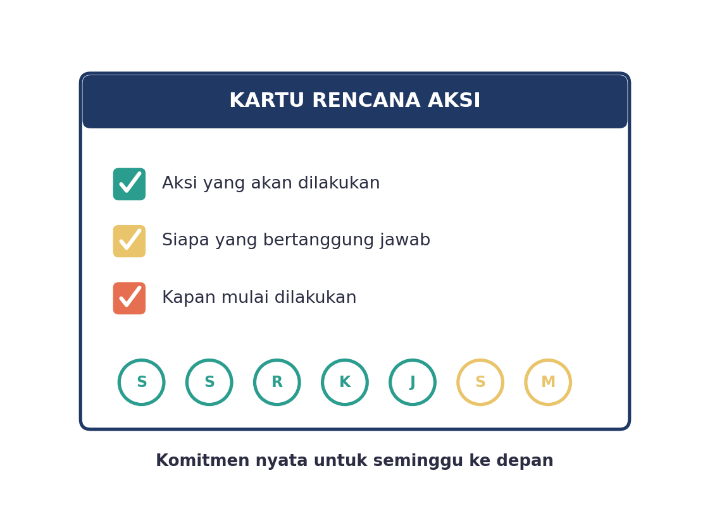

Yuk, Intip Apa yang Bakal Kamu Kuasai Hari Ini
Setelah pertemuan lanjutan ini, kamu bakal bisa:
- menghitung estimasi konsumsi listrik (kWh) dan biayanya (Rupiah) dari data yang udah kamu kumpulkan;
- memilah rekomendasi hemat energi mana yang paling worth it pakai matriks prioritas;
- menyempurnakan poster/infografismu berdasarkan umpan balik teman lewat gallery walk;
- menyusun rencana aksi nyata yang bisa langsung kamu jalani minggu ini juga.
Kata Kunci
Sebelum Lanjut, Coba Diinget-Inget Dulu
Di pertemuan sebelumnya, kelompokmu udah kerja keras banget: mewawancarai teman sekelas, mencatat kebiasaan sendiri selama seminggu, ngolah semua data itu jadi grafik (Tabel 1.4 dan 1.5), terus nuangin hasilnya ke poster lengkap dengan rekomendasi awal, dan udah dipresentasikan juga ke teman-teman.
Nah, kalau data dan grafik kemarin itu ibarat “ketemu masalahnya”, pertemuan hari ini adalah soal “ngapain abis itu?”. Kita akan bikin rekomendasimu makin kuat — nggak cuma sekadar saran, tapi juga ada angka pendukungnya, ada prioritasnya, udah diuji lewat masukan orang lain, dan yang paling penting: ada rencana nyata buat dijalanin.
Poster/infografis kelompokmu dari pertemuan sebelumnya, Tabel 1.4 (hasil wawancara) dan Tabel 1.5 (catatan mandiri), alat tulis, dan kalkulator (atau kalkulator di HP juga boleh).
Kenalan Dulu, Yuk, Sama Kegiatan Hari Ini
Ada lima langkah seru yang bakal kamu lewati bareng kelompok hari ini. Semuanya nyambung satu sama lain — dari angka, ke prioritas, ke penyempurnaan, ke masukan orang lain, sampai ke aksi nyata.

Langkah 1: Menghitung Estimasi kWh dan Rupiah

Inget rumus yang kamu pelajari di TP 4? Rumus itu bakal kepake lagi di sini buat menghitung berapa sih sebenarnya konsumsi listrik dari kebiasaan yang udah kamu catat:
Gurumu akan membagikan tabel asumsi daya alat elektronik (misalnya TV, lampu LED, lampu biasa, charger HP). Pakai tabel itu buat menghitung estimasi kWh dari data rata-rata kelompokmu, lalu ubah jadi estimasi Rupiah pakai asumsi tarif yang diberikan gurumu.
Contoh: kalau rata-rata rumah di kelompokmu nyalain TV 3 jam sehari, dan daya TV-nya 80 Watt, maka:
| Langkah | Perhitungan |
|---|---|
| Hitung kWh/hari | (80 × 3 × 1) ÷ 1000 = 0,24 kWh/hari |
| Ubah ke estimasi Rupiah/hari | 0,24 kWh × tarif per kWh (dari gurumu) |
| Ubah ke estimasi Rupiah/bulan | hasil Rupiah/hari × 30 hari |
Coba hitung juga buat kebiasaan lain di kelompokmu, misalnya lampu atau charger HP. Bandingkan: kebiasaan mana yang ternyata paling boros kalau diubah jadi angka Rupiah?
Angka Rupiah yang kamu hitung itu estimasi/perkiraan ya, bukan tagihan listrik yang pasti — soalnya tarif listrik asli itu bertingkat dan bisa beda-beda tiap daerah. Tapi estimasi ini tetep berguna banget buat ngebandingin, kebiasaan mana yang paling berdampak.
Langkah 2: Memilih Prioritas Pakai Matriks
Sekarang kelompokmu pasti punya beberapa ide rekomendasi hemat energi. Tapi nggak semua rekomendasi itu sama pentingnya atau sama gampangnya dilakukan. Makanya, kita pakai alat bantu namanya matriks prioritas buat milih mana yang paling worth it dikerjakan duluan.

Caranya gampang: taruh setiap ide rekomendasi kelompokmu di salah satu dari empat kotak (kuadran) berikut, berdasarkan dua pertanyaan:
- Seberapa besar dampaknya kalau dilakukan? (Dampak Besar atau Dampak Kecil)
- Seberapa gampang dilakukan sehari-hari? (Mudah Dilakukan atau Sulit Dilakukan)
PRIORITAS UTAMA — fokus utama rencana aksi kelompokmu.
Bisa jadi target jangka panjang.
Boleh jadi kebiasaan tambahan.
Sebaiknya tidak diprioritaskan dulu.
Dari semua ide rekomendasi kelompokmu, mana yang paling gampang dilakukan besok pagi juga? Mana yang paling berdampak besar walau butuh usaha lebih? Coba sepakati bareng-bareng sebelum lanjut ke langkah berikutnya.
Langkah 3: Menyempurnakan Poster/Infografis
Sekarang kelompokmu punya dua senjata baru: angka estimasi Rupiah dan rekomendasi prioritas dari matriks. Waktunya nambahin itu semua ke poster/infografis yang udah kamu buat di pertemuan sebelumnya, biar makin meyakinkan.
- Tambahkan angka estimasi kWh dan Rupiah di dekat grafik yang relevan — angka itu bikin temuanmu jauh lebih konkret dibanding cuma grafik doang.
- Tandai rekomendasi mana yang jadi PRIORITAS UTAMA hasil matriks tadi, misalnya dengan bintang atau warna mencolok.
- Rapikan tampilan: pastikan judul, label grafik, dan tulisan gampang dibaca dari jarak sekitar 1-2 meter (karena nanti bakal dipajang untuk gallery walk).
Langkah 4: Gallery Walk — Kunjungi Karya Kelompok Lain

Semua poster kelompok bakal dipajang di kelas, terus kamu dan kelompokmu akan berkeliling — persis kayak jalan-jalan di pameran seni — buat melihat hasil kerja kelompok lain dan memberi umpan balik lewat sticky note.
Aturan mainnya gampang: di setiap poster yang kamu kunjungi, tulis satu pujian dan satu saran di sticky note, lalu tempelkan di poster itu.
| Tulis Ini | Contoh |
|---|---|
| Satu pujian | “Grafiknya jelas banget dan rekomendasinya masuk akal!” |
| Satu saran | “Coba tambahin angka Rupiah biar makin meyakinkan.” |
Fokus ke karyanya, bukan ke orangnya. Kasih masukan yang spesifik dan bisa langsung ditindaklanjuti — bukan cuma “bagus” atau “kurang menarik”, tapi jelasin bagian mana dan kenapa.
Langkah 5: Menyusun Rencana Aksi

Ini bagian paling seru — setelah membaca sticky note dari teman-teman, kelompokmu akan merevisi cepat kalau perlu, lalu menyusun satu Kartu Rencana Aksi berdasarkan rekomendasi PRIORITAS UTAMA yang sudah disepakati.
Kartu ini isinya tiga hal penting:
- Aksi yang akan dilakukan — apa persisnya yang mau diubah/dilakukan?
- Siapa yang bertanggung jawab — anggota kelompok mana yang memastikan ini beneran jalan?
- Kapan mulai dilakukan — mulai kapan, dan berapa hari targetnya?
Kartu Rencana Aksi ini juga dilengkapi pelacak 7 hari (Senin sampai Minggu) — setiap hari kamu bisa mencentang kalau aksinya beneran dijalani. Simpel, tapi ini yang bikin rekomendasimu nggak cuma jadi wacana di atas kertas!
Bocoran Tips Biar Makin Mantap
- Pilih rekomendasi yang paling realistis buat kelompokmu jalani, bukan yang paling keren kedengarannya.
- Kalau hitungan kWh/Rupiah kelompokmu terasa aneh, cek lagi angka daya dan jam yang dipakai — kesalahan kecil di rumus bisa bikin hasilnya jauh meleset.
- Waktu gallery walk, jangan cuma baca poster orang lain — perhatikan juga cara mereka menyajikan angka, siapa tau ada ide bagus yang bisa kamu tiru.
Analisis data yang keren itu bukan yang berhenti di grafik cantik, tapi yang berujung pada tindakan nyata. Kartu Rencana Aksi kelompokmu adalah bukti bahwa proyek ini beneran mengubah sesuatu, bukan cuma tugas sekolah biasa.
Rangkuman Singkat
- Data dan grafik yang sudah dikumpulkan diubah jadi estimasi kWh dan Rupiah memakai rumus (Daya × Jam × Unit) ÷ 1000, supaya dampaknya lebih konkret.
- Matriks Prioritas (Dampak vs Kemudahan) membantu memilih rekomendasi mana yang paling layak dijadikan prioritas utama.
- Gallery Walk memberi kesempatan menerima umpan balik dari kelompok lain lewat satu pujian dan satu saran, untuk menyempurnakan poster.
- Kartu Rencana Aksi menuliskan komitmen konkret (aksi, penanggung jawab, waktu mulai) yang dilacak selama satu minggu, mengubah rekomendasi jadi tindakan nyata.
Cek Dulu, Udah Paham Belum?
Sebelum mulai kegiatan, coba jawab dulu pertanyaan berikut sendirian.
Kamus Kecil Istilah Penting
- Estimasi
- perkiraan angka yang dihitung berdasarkan asumsi dan data yang tersedia, bukan pengukuran langsung yang presisi.
- Matriks Prioritas
- alat bantu visual berbentuk grid 2x2 untuk membandingkan beberapa pilihan berdasarkan dua kriteria sekaligus.
- Gallery Walk
- kegiatan berkeliling melihat dan memberi umpan balik terhadap hasil karya kelompok lain, seperti mengunjungi pameran karya.
- Rencana Aksi
- rencana konkret dan terukur (apa, siapa, kapan) untuk menindaklanjuti hasil analisis menjadi tindakan nyata.
- Rekomendasi Berbasis Data
- solusi atau saran yang dirancang berdasarkan hasil analisis data nyata, bukan sekadar opini atau tebakan.